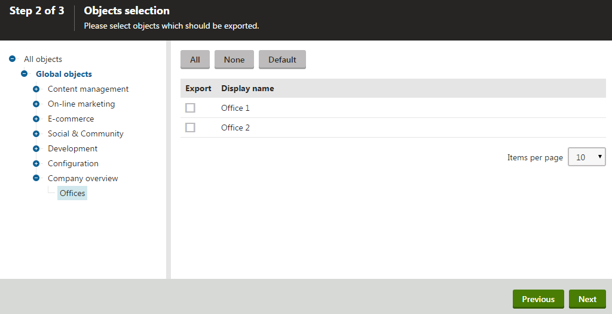

Enabling export and staging for the data of classes
The Export - Import and Staging features allow you to transfer objects between Kentico instances. To use these features for the data of custom module classes, you need to set the appropriate type information when developing your classes. If you need more information about the basics of module and class development, see the example in Creating custom modules.
Enabling export and import support
To add export and import support for a custom module class:
Open the Kentico solution where you are developing the custom module (in Visual Studio).
Edit the Info class representing your module class.
Set the ImportExportSettings property in the initializer of the TYPEINFO object. Use a nested initializer to configure the properties of the ImportExportSettings class:
Set IsExportable to true.
Assign a List of ObjectTreeLocation objects to the ObjectTreeLocations property.
Set the other ImportExportSettings properties according to the type of the class and your requirements. See the ImportExportSettings reference for more information.
Each ObjectTreeLocation object adds the class to a location within the object tree in the export and import wizard used by the Kentico interface.
ObjectTreeLocation objects accept any number of string parameters, each representing a category (level) in the object tree, starting from the GLOBAL or SITE system categories. You can either use custom strings, or the default Kentico category constants. The tree item containing the class's objects is added under the last category.
ImportExportSettings ={IsExportable =true,ObjectTreeLocations =newList<ObjectTreeLocation>(){// Adds the custom class into a new category in the Global objects section of the export treenewObjectTreeLocation(GLOBAL,"Custom"),},},
Save the changes (build the project on web application installations).
Create resource strings for the text of the class and any custom categories in the object tree of the export interface. Use the following format for the resource string keys:
ObjectTasks.<object type name with an underscore> - sets the text of the tree item representing the class in the export object tree.
ObjectTasks.<category string> - sets the text of the matching custom category in the export object tree.
Users can now create export packages containing objects of your custom class (via the Sites application). The packages can be imported on other Kentico instances with the same custom module.
Enabling staging support
To allow Staging for objects of a custom module class:
Open the Kentico solution where you are developing the custom module (in Visual Studio).
Edit the Info class representing your module class.
Set the SynchronizationSettings property in the initializer of the TYPEINFO object. Use a nested initializer to configure the properties of the SynchronizationSettings class:
Set the LogSynchronization property to one of the options from the SynchronizationTypeEnum:
Value
Description
None
Default value for classes without a parent class. The system does not log staging tasks for objects of the class.
LogSynchronization
The system logs staging tasks when objects of the class are created, updated or deleted.
TouchParent
Default value for classes that have a parent class.
When an object of the child class is created, modified or deleted, the system triggers an update of the parent object. The update generates staging tasks according to the type information settings of the parent class.
The IncludeToSynchronizationParentDataSet property in the type information of the child class allows you to define how the parent class contains the data of child objects.
Default
Do not set this value (not intended for manual use).
For classes that have a parent class, set the IncludeToSynchronizationParentDataSet property. The value must be one of the options from the IncludeToParentEnum (the default value is Complete for classes that have a parent class set in their type information).
Assign a List of ObjectTreeLocation objects to the ObjectTreeLocations property.
Each ObjectTreeLocation object adds the class to a location within the object tree on the Objects tab of the Staging application.
ObjectTreeLocation objects accept any number of string parameters, each representing a category (level) in the object tree, starting from the GLOBAL or SITE system categories. You can either use custom strings, or the default Kentico category constants. The tree item containing the class's objects is added under the last category.
SynchronizationSettings ={LogSynchronization = SynchronizationTypeEnum.LogSynchronization,ObjectTreeLocations =newList<ObjectTreeLocation>(){// Adds the custom class into a new category in the Global objects section of the staging treenewObjectTreeLocation(GLOBAL,"Custom")},},
Save the changes (build the project on web application installations).
Create resource strings for the text of the class and any custom categories in the object tree of the staging interface. Use the following format for the resource string keys:
ObjectTasks.<object type name with an underscore> - sets the text of the tree item representing the class in the staging object tree.
ObjectTasks.<category string> - sets the text of the matching custom category in the staging object tree.
Tip: If you are configuring both staging and export for a custom class, you can reuse resource strings. The object trees in the export and staging interface share the same resource string key format.
You can now use staging to synchronize the class's objects to other Kentico instances with the same custom module. The system logs staging tasks whenever one of the class's objects is created, modified or deleted (if staging of object changes is enabled).
Ensuring object ID translation during deployment
When transferring the data of custom classes between instances, the IDs of objects can differ between the environments. For example, when you stage an object that contains a field storing another object's ID, the value may not match the ID of the same object on the target server.
Kentico automatically "translates" the ID values for fields that are correctly registered as references (dependencies) in the class's type information.
If you have a custom field storing IDs that you do not wish to register as a reference, you can set up a custom translation process:
Register your custom module in the API as described in Initializing modules to run custom code.
Assign handler methods to the ColumnsTranslationEvents events in the module's initialization code.
Define the ID translation logic in the handlers. For more information, see Deploying objects with custom ID fields.
Example - Setting up export and staging for a custom class
The following example demonstrates how to enable export and staging for the data records of a custom class.
To follow the example, you first need to create the Company overview custom module and the Office class according to the instructions in Creating custom modules.
Open your web project in Visual Studio.
Edit OfficeInfo.cs (by default in the ~/App_Code/CMSModules/CompanyOverview folder).
Add a using statement for the System.Collections.Generic namespace.
usingSystem.Collections.Generic;Navigate to the TYPEINFO field in the class's code.
Define the ImportExportSettings and SynchronizationSettings in the initializer of the new ObjectTypeInfo object.
publicstaticObjectTypeInfo TYPEINFO =newObjectTypeInfo(typeof(OfficeInfoProvider), OBJECT_TYPE,"CompanyOverview.Office","OfficeID","OfficeLastModified","OfficeGUID","OfficeName","OfficeDisplayName",null,null,null,null){ModuleName ="CompanyOverview",TouchCacheDependencies =true,ImportExportSettings ={IsExportable =true,// Makes the data of the custom Office class exportableAllowSingleExport =true,// Allows export of single office objects from the office listing pageObjectTreeLocations =newList<ObjectTreeLocation>(){// Creates a new category in the global objects export interfacenewObjectTreeLocation(GLOBAL,"CompanyOverview")}},SynchronizationSettings ={LogSynchronization = SynchronizationTypeEnum.LogSynchronization,// Enables logging of staging tasks for changes made to Office objectsObjectTreeLocations =newList<ObjectTreeLocation>(){// Creates a new category in the 'Global objects' section of the staging object treenewObjectTreeLocation(GLOBAL,"CompanyOverview")}}};Save the changes (build the project on web application installations).
Create resource strings for the text of the new category and class in the object export and staging interface:
In the Kentico administration interface, open the Localization application.
On the Resource strings tab, click New string.
Enter the following Key: ObjectTasks.CompanyOverview
Type the following text for the English version of the key: Company overview
Click Save.
Click New string.
Enter the following Key: ObjectTasks.CompanyOverview_Office
Type the following text for the English version of the key: Offices
Click Save.
You can now export the data records of the custom Office class and import the packages on other instances that contain the sample Company overview module. To test the functionality:
Open the Sites application.
Click Export.
Enter a File name for the export package and click Next.
You can find the custom Company overview category in the Global objects section of the tree. When you click the Offices object type, you can select office records and continue with the export.

Exporting the data of a custom module class
For staging, you can find the Company overview category in the Global objects section of the tree on the Objects tab of the Staging application. The system logs staging tasks whenever an office object is created, modified or deleted (if staging of object changes is enabled).
References
ImportExportSettings
The reference lists the ImportExportSettings properties that are intended for public use. The class also contains other members, which are used internally or handled automatically by the system. We do not recommend working with any of the undocumented members.
|
Property |
Type |
Description |
|
AllowSingleExport |
bool |
Allows export of individual objects of the given class from UniGrid listing pages. See also: Exporting single objects |
|
IncludeToExportParentDataSet |
IncludeToParentEnum |
Applies to classes that have a parent class. Determines whether the system automatically includes objects of the class when exporting parent objects. See IncludeToParentEnum to learn about the available values. The default value is Complete for classes that have the ParentObjectType and ParentID properties set in their type information. |
|
IsExportable |
bool |
Allows export of the class's data. Important: Must be set to true if you wish to use the import and export features for the class. |
|
LogExport |
bool |
If enabled, the system logs delete tasks when objects of the given class are deleted. You can include the delete tasks in export packages, and then use them to delete the given objects on other instances during the import. Logging of export tasks must also be enabled globally (or for individual sites) using the Settings -> Versioning & Synchronization -> Staging -> Log export tasks setting. |
|
LogProgress |
bool |
Determines whether the import progress log includes a record for objects of the class (for example "Importing Users"). True by default. |
|
ObjectTreeLocations |
List<ObjectTreeLocation> |
Adds the class to the user interface in the object selection step of the export wizard. Defined as a List collection of ObjectTreeLocation objects.
Example
ObjectTreeLocations = new List<ObjectTreeLocation>{ new ObjectTreeLocation(GLOBAL, CONFIGURATION, "CUSTOM"), new ObjectTreeLocation(SITE, CONFIGURATION, "CUSTOM")} |
|
OrderBy |
string |
An SQL Order by clause that sets the order of objects in the XML data of export packages. Ensures that all export packages containing the same objects have a consistent order and matching XML data. If not set, the default order is based on the values of the following column types (depending on what is available for the class):
|
|
WhereCondition |
string |
An SQL Where condition that defines which objects of the class are available for export (in the object selection step of the export process). Allows you to disable export for testing or internal objects. Does not affect the single object export. Example: OfficeName NOT LIKE 'internal%' The sample value above excludes all objects whose value in the OfficeName field starts with the internal prefix. |
SynchronizationSettings
|
Property |
Type |
Description |
|
ExcludedStagingColumns |
IList<string> |
Allows you to specify fields that are not processed when creating or updating objects of the class via staging. Defined as an IList collection of field names (as a blacklist of fields). If not set, staging for objects of the given type includes all fields by default. For classes with excluded fields, staging works in the following way:
Note: The property does NOT limit the actual data of staging tasks, only the create and update operations that take place on the target server. |
|
IncludeToSynchronizationParentDataSet |
IncludeToParentEnum |
Applies to classes that have a parent class. Determines whether the staging data of parent objects automatically includes child objects of the given class. See IncludeToParentEnum to learn about the available values. The default value is Complete for classes that have the ParentObjectType and ParentID properties set in their type information. |
|
LogCondition |
Allows you to specify a condition that determines which objects of the class generate staging tasks. Example
SynchronizationSettings ={ LogCondition = FilterTestObjects, ...}...private static bool FilterTestObjects(BaseInfo classObj){ var classInfo = (CustomClassInfo)classObj; // Disables staging for objects whose code name starts with "test_" if (classInfo.CustomClassName.StartsWithCSafe("test_")) { return false; } return true;} |
|
|
LogSynchronization |
SynchronizationTypeEnum |
Determines whether the system logs staging tasks for objects of the class. The following SynchronizationTypeEnum values are available:
|
|
ObjectTreeLocations |
List<ObjectTreeLocation> |
Adds the class to the object tree on the Objects tab of the Staging application. Defined as a List collection of ObjectTreeLocation objects.
Example
SynchronizationObjectTreeLocations = new List<ObjectTreeLocation>(){ new ObjectTreeLocation(GLOBAL, CONFIGURATION, "CUSTOM"), new ObjectTreeLocation(SITE, CONFIGURATION, "CUSTOM")} |
IncludeToParentEnum
The IncludeToParentEnum has the following possible values:
|
Value |
Description |
|
None |
Objects of the child class are not included in the export or staging data of parent objects. |
|
Complete |
The export or staging data of parent objects includes all existing child objects of the given class. When importing a parent object without child objects that exist on the target instance, the system automatically deletes the child objects missing in the import data. |
|
Incremental |
The export or staging data of parent objects includes all existing child objects of the given class. The import process can only add new child objects or update existing ones. The system never deletes child objects on the target instances if they are missing in the import data of the parent object. |
|
Default |
Do not set this value (not intended for manual use). |